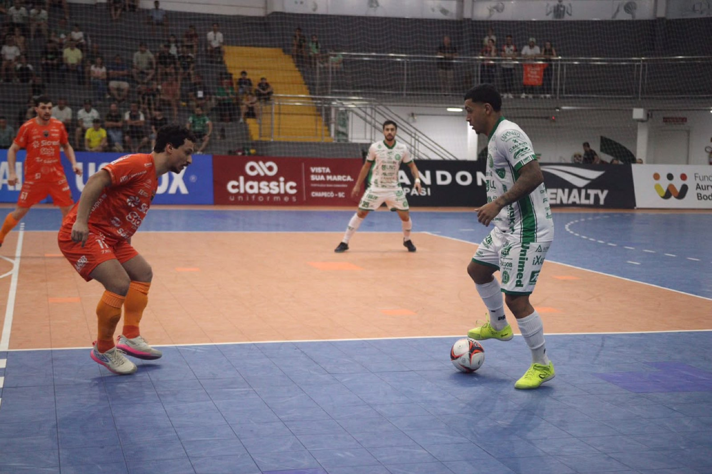
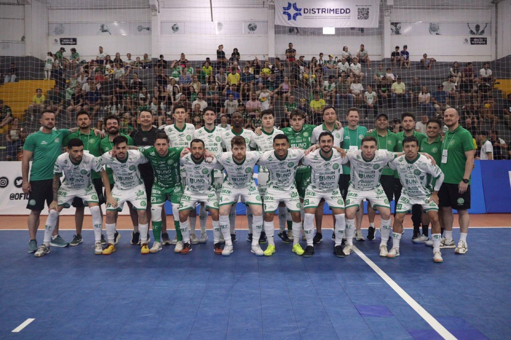

Espetacular! A Prefeitura de Chapecó/Chapecoense/Unochapecó está na final da Copa Sul de Futsal Masculino 2026. O Verdão das Quadras derrotou o Passo Fundo (RS) por 2 a 1, na noite deste sábado (26), pela semifinal, e decide o título contra o Campo Mourão (PR). O torneio é disputado na Arena Ivo Sguissardi, em Xanxerê.
Em um primeiro tempo de muito equilíbrio, a rede balançou somente no fim. Aos 18'39", Sales abriu o placar para os gaúchos. O time do Oeste catarinense voltou para a segunda etapa disposta a mudar o cenário. Conseguiu. Com uma postura agressiva, chegou ao empate logo aos 46 segundos. Ximba igualou.

A Chape Futsal estava concentrada para buscar a virada. E...conseguiu. Fael fez o segundo aos 17'13". O Verdão teve a chance do terceiro no tiro livre cobrado por Kassula, mas a bola foi na trave. Os donos da casa souberam se defender e seguraram o resultado.

Agora, a Chapecoense vai brigar pela taça diante do Campo Mourão, que eliminou o Jaraguá (SC) por 1 a 0 na prorrogação, após 4 a 4 no tempo normal. A finalíssima será às 16 deste domingo (27).
Crédito das fotos: @rogersilva_fotografia/@achapefutsal